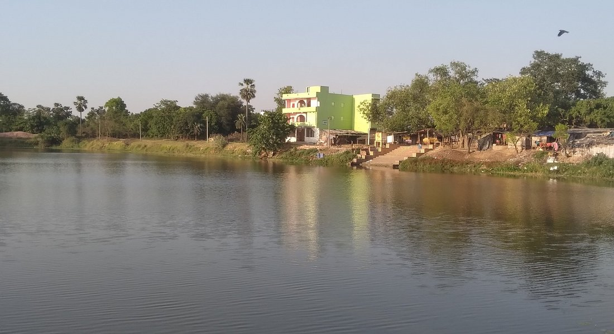
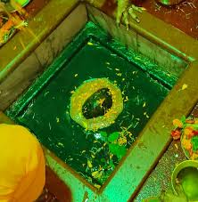
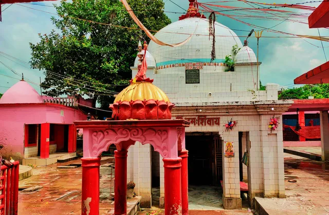
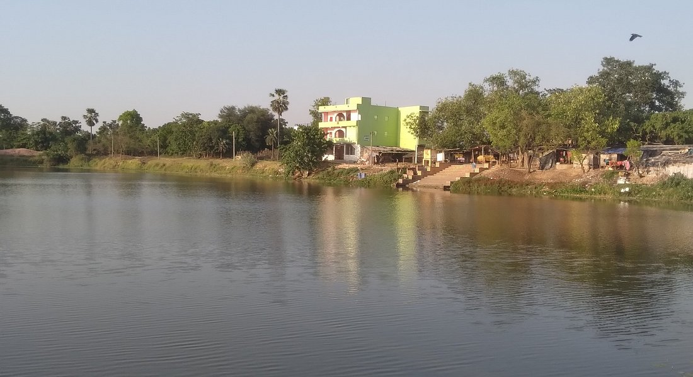
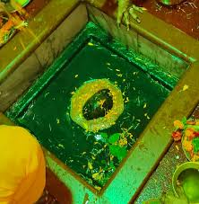
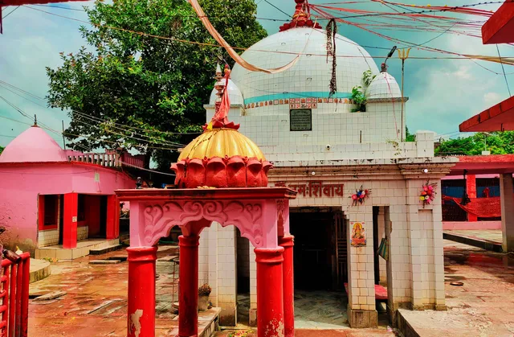

Overview
Kapileshwar Mandir is a renowned Hindu temple dedicated to Lord Shiva, located in Rahika, Madhubani district, Bihar. This ancient shrine is a spiritual cornerstone for devotees in the Mithila region and attracts pilgrims year-round, especially during the holy month of Sawan and on Mahashivratri. The temple is celebrated for its serene ambiance, sacred pond, and historical legends that connect it to the sage Kapil and the epic Ramayana.
History & Legends
- The temple's origins are considered ancient, with references in regional folklore and religious texts.
- A large, holy pond adjacent to the temple is believed to purify devotees who bathe in it before darshan.
- The temple complex features beautiful stone carvings and a tranquil environment, ideal for meditation and worship.
Religious Significance
Kapileshwar Mandir is one of the Panch Mahadev temples of Mithilanchal, holding immense significance for Shaivites. It is a favored destination for Kanwariyas during the Sawan month, who collect holy water to offer to Lord Shiva. The temple is also a center for cultural and spiritual gatherings, making it a living symbol of Mithila's religious heritage.
Festivals & Celebrations
- Mahashivratri: Marked by grand celebrations, night-long prayers, and special rituals.
- Sawan (Shravan) Month: Thousands of devotees perform Kanwar Yatra and offer holy water to the Shiva lingam.
- Chhath Puja: The temple pond becomes a focal point for Chhath rituals.
Visitor Information
| Location | Rahika, Madhubani District, Bihar, India |
|---|---|
| Timings | 5:00 AM – 9:00 PM (open all days) |
| How to Reach |
|
Why Visit Kapileshwar Mandir?
- Experience the spiritual energy of an ancient Shiva temple in Mithila.
- Participate in vibrant festivals and traditional rituals.
- Enjoy the peaceful surroundings and the temple's sacred pond.
- Explore Mithila’s unique cultural and religious heritage.